Visual Studio的使用
1. 关于VS的使用
1.1 创建工程编写代码
1 |
|
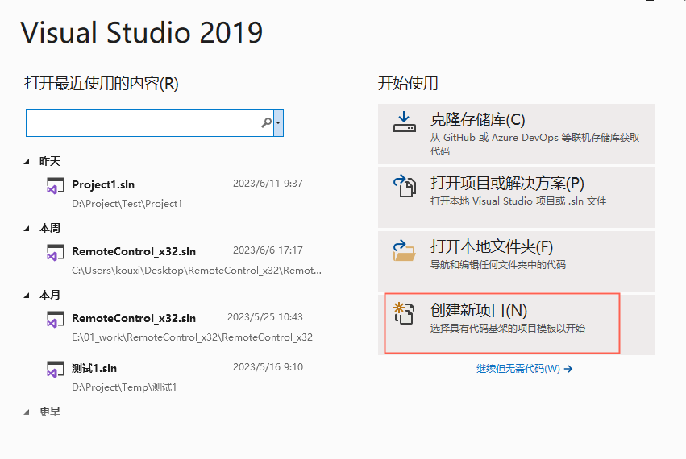
选择空项目
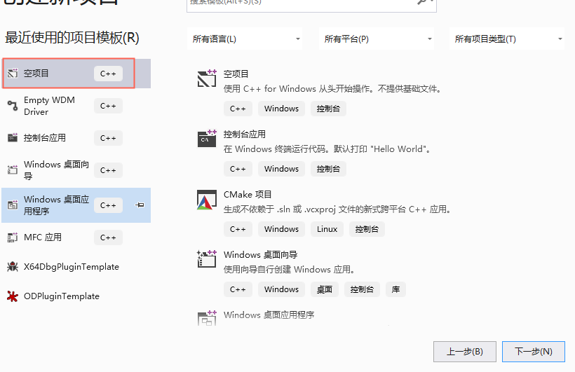
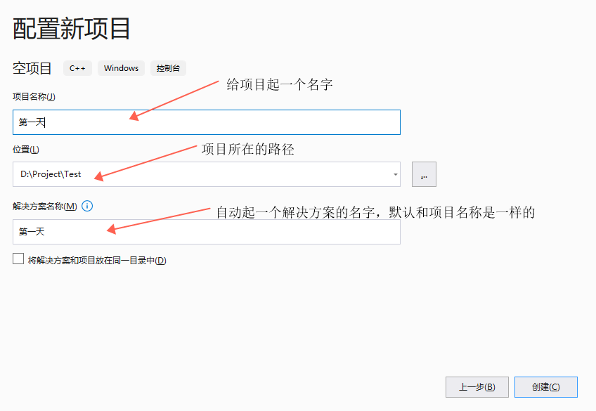
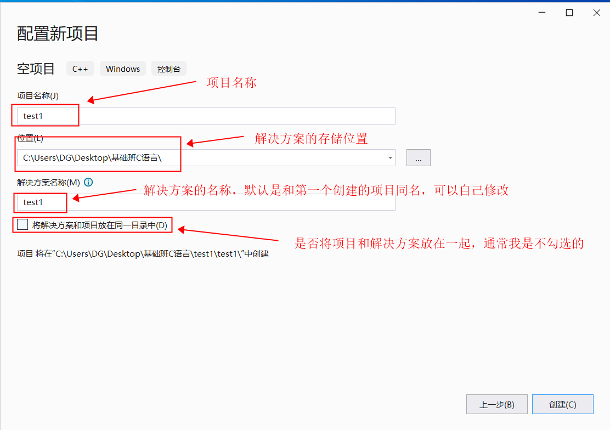
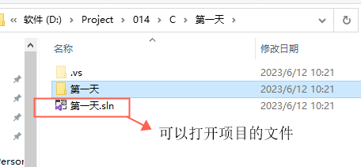
项目是空的，我们需要添加一个文件，用来写代码：
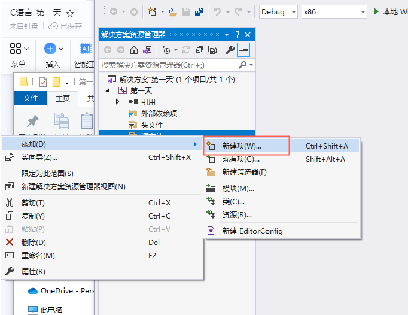
添加一个文件，用于写代码
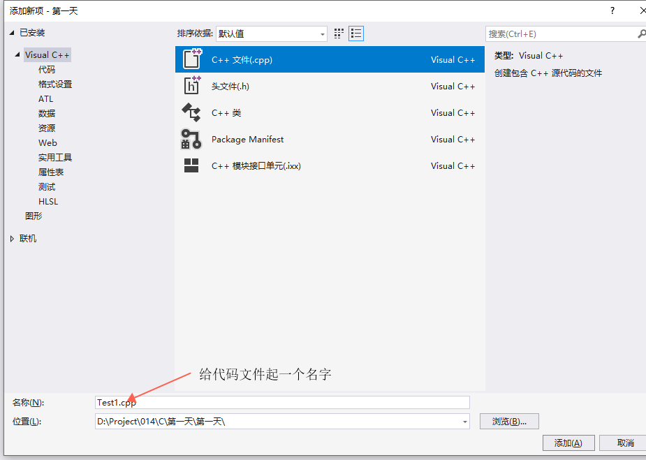
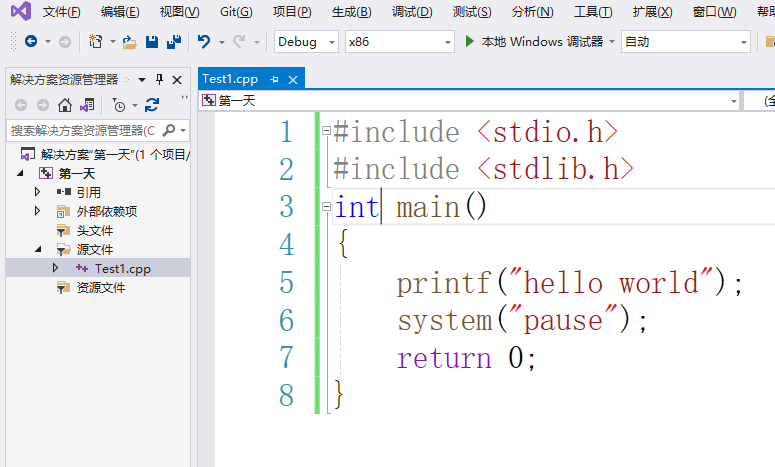
##1.2 编译程序
###1.2.1 设置编译选项
程序有两个版本，debug(调试版本) 和 release(发行版本)，
- 学习的过程中，通常是 debug，方便调试
- 发行的时候，通常是 release，方便减小程序的体积，进行代码优化
程序的运行平台，x86，x64
- x86 的32 位操作系统下运行的程序，64位系统兼容32位程序
- x64 是64 位操作系统下运行的程序，32位系统不能运行这种程序
- 在学习的过程中，如果不特殊指定64位，那么通常就是说的 x86 的程序
1.2.2 右键—-》生成 仅编译
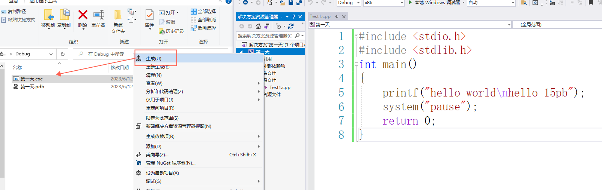
1.2.3 编译+调试运行
快捷键：F5
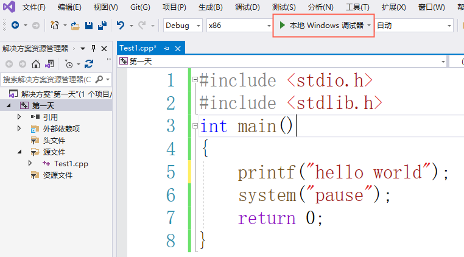
1.2.4 编译+直接运行
快捷键：ctrl+F5
调试运行 与直接运行的区别：
调试运行的话，VS对于程序是有控制能力的
直接运行，VS对于程序是没有任何控制能力的
1.2.5 编译失败
当写的代码有问题的时候，编译就有可能失败，VS会提示我们哪里有错误
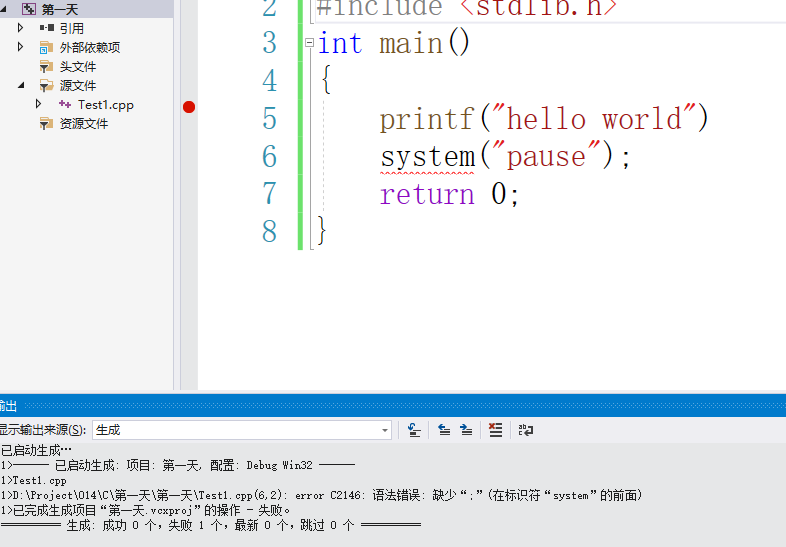
1.3 VS的工程管理结构
一个解决方案，下面可以有多个项目，每一个项目中，可以有多个 源文件。
- 项目之间是相互独立的
- 同一个项目中的 源文件是相互影响的
解决方案：
工程1（项目1）
源代码文件1
源代码文件2
源代码文件3
工程2（项目2）
源代码文件1
源代码文件2
源代码文件3
工程3（项目3）
源代码文件1
源代码文件2
源代码文件3
工程4（项目4）
源代码文件1
源代码文件2
源代码文件3
每一个工程，都是一个独立的程序，相互之间可以没有任何关系。
每一个工程可以有很多的源文件。属于同一个工程下的这些源文件是关系的。他们相互配合组成一个项目，组成一个程序。编译的时候，同一个工程的内的所有源文件是一起编译的。
1.4 添加项目
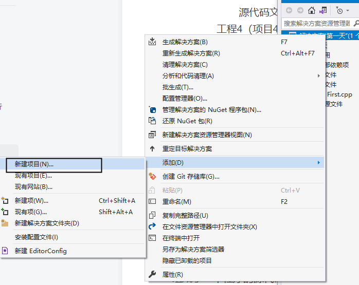
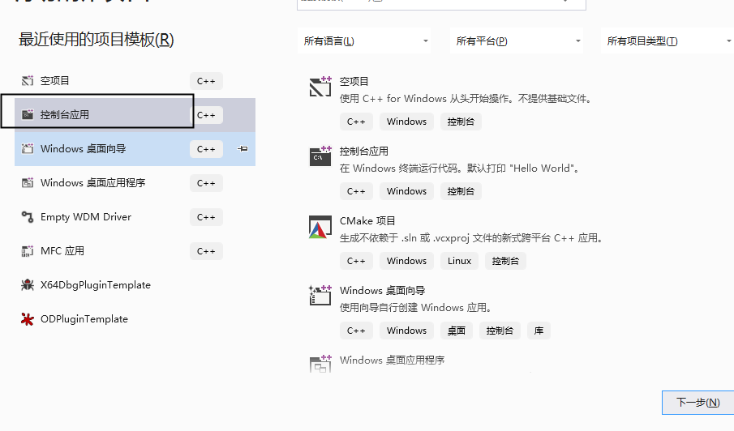
添加完工程之后，如果想要让新的工程是默认工程，需要设置一下
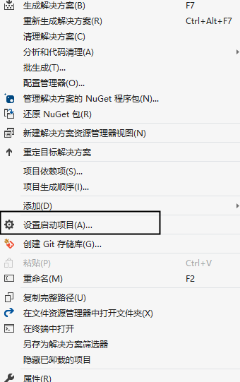
1.5 寻找关闭的窗口
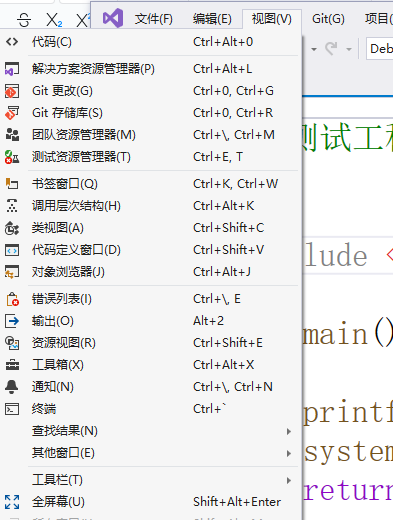
2. C/C++程序工程管理的问题
2.1 基本的使用
一个正常的工程，应该是由多个文件所组成的。
MyMath.h
1 |
|
MyMath.cpp
1 | int g_nNum = 100; |
MyString.h
1 |
|
MyString.cpp
1 | int GetLenth(char Name[20]) |
在使用这些函数的地方，去包含相应的头文件
1 |
|
2.2 需要注意的问题
.h文件中 只能写声明，不能写定义，否则容易出问题- 如果发现了这样的错误
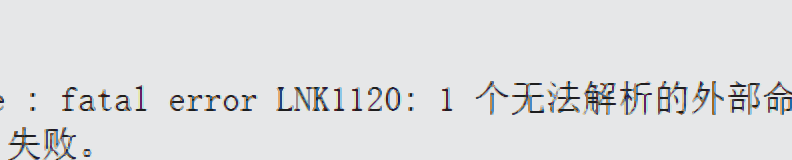
就是声明和定义 不匹配。或者 有声明，但是没写定义。
- 如果一个文件中的函数或者全局变量，不想给其他文件用，可以声明为 static
1 | //在函数的前面加上 static 这个函数就只能在 |
资源区：
Visual Studio 2015 中文社区版 (在线安装包）：
http://download.microsoft.com/download/B/4/8/B4870509-05CB-447C-878F-2F80E4CB464C/vs_community.exe
Visual Studio 2015 中文社区版 (完整 ISO 镜像)：（推荐）
http://download.microsoft.com/download/B/4/8/B4870509-05CB-447C-878F-2F80E4CB464C/vs2015.com_chs.iso